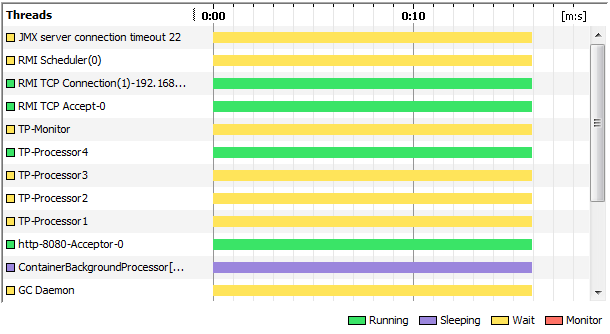
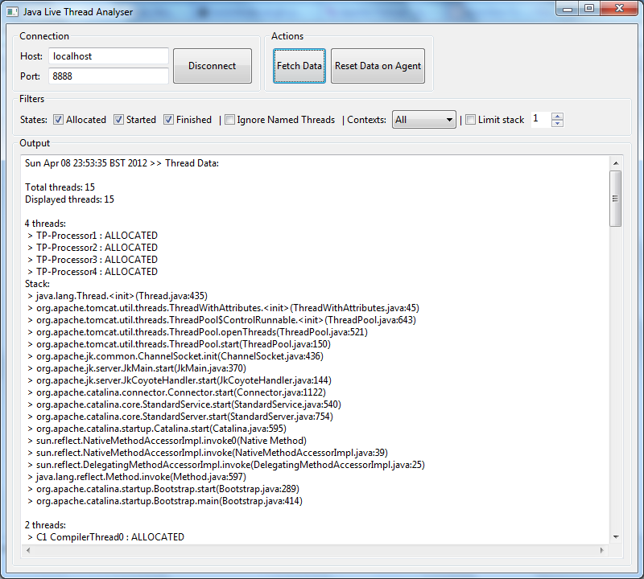

Java Live Thread Analyser is a tool for investigating the origin and lifetime of Java threads.
Download
Understanding the internals of a running Java program is sometimes quite challenging. One of the approaches which can be taken is to look at what threads are running and what code they are executing. A timeline of threads can be seen in Visual VM and a thread dump can be used to work out what code all the threads are executing.

However, VisualVM and thread dumps don't make it clear how a thread was created. This is particularly interesting for short lived threads that are dead before you have a chance to take a thread dump.
To make it easier to identify what code is creating threads I created a tool which I have called Java Live Thread Analsis. This comes in two parts. A Java Agent which collects the thread data and exposes it over a TCP socket. The second part is a UI which downloads the data and summarises it in a sensible way.

Here is an example of the output which is generated.
Mon Apr 09 00:33:08 BST 2012 >> Thread Data: Total threads: 15 Displayed threads: 15 4 threads: > TP-Processor1 : ALLOCATED > TP-Processor2 : ALLOCATED > TP-Processor3 : ALLOCATED > TP-Processor4 : ALLOCATED Stack: > java.lang.Thread.(Thread.java:435) > org.apache.tomcat.util.threads.ThreadWithAttributes. (ThreadWithAttributes.java:45) > org.apache.tomcat.util.threads.ThreadPool$ControlRunnable. (ThreadPool.java:643) > org.apache.tomcat.util.threads.ThreadPool.openThreads(ThreadPool.java:521) > org.apache.tomcat.util.threads.ThreadPool.start(ThreadPool.java:150) > org.apache.jk.common.ChannelSocket.init(ChannelSocket.java:436) > org.apache.jk.server.JkMain.start(JkMain.java:370) > org.apache.jk.server.JkCoyoteHandler.start(JkCoyoteHandler.java:144) > org.apache.catalina.connector.Connector.start(Connector.java:1122) > org.apache.catalina.core.StandardService.start(StandardService.java:540) > org.apache.catalina.core.StandardServer.start(StandardServer.java:754) > org.apache.catalina.startup.Catalina.start(Catalina.java:595) > sun.reflect.NativeMethodAccessorImpl.invoke0(Native Method) > sun.reflect.NativeMethodAccessorImpl.invoke(NativeMethodAccessorImpl.java:39) > sun.reflect.DelegatingMethodAccessorImpl.invoke(DelegatingMethodAccessorImpl.java:25) > java.lang.reflect.Method.invoke(Method.java:597) > org.apache.catalina.startup.Bootstrap.start(Bootstrap.java:289) > org.apache.catalina.startup.Bootstrap.main(Bootstrap.java:414) 2 threads: > C1 CompilerThread0 : ALLOCATED > Low Memory Detector : ALLOCATED Stack: 1 threads: > GC Daemon : STARTED Stack: > java.lang.Thread. (Thread.java:477) > sun.misc.GC$Daemon. (GC.java:109) > sun.misc.GC$Daemon. (GC.java:69) > sun.misc.GC$Daemon$1.run(GC.java:120) > java.security.AccessController.doPrivileged(Native Method) > sun.misc.GC$Daemon.create(GC.java:127) > sun.misc.GC.setLatencyTarget(GC.java:140) > sun.misc.GC.access$500(GC.java:24) > sun.misc.GC$LatencyRequest.adjustLatencyIfNeeded(GC.java:175) > sun.misc.GC$LatencyRequest. (GC.java:200) > sun.misc.GC$LatencyRequest. (GC.java:156) > sun.misc.GC.requestLatency(GC.java:254) > sun.reflect.NativeMethodAccessorImpl.invoke0(Native Method) > sun.reflect.NativeMethodAccessorImpl.invoke(NativeMethodAccessorImpl.java:39) > sun.reflect.DelegatingMethodAccessorImpl.invoke(DelegatingMethodAccessorImpl.java:25) > java.lang.reflect.Method.invoke(Method.java:597) > org.apache.catalina.core.JreMemoryLeakPreventionListener.lifecycleEvent(JreMemoryLeakPreventionListener.java:267) > org.apache.catalina.util.LifecycleSupport.fireLifecycleEvent(LifecycleSupport.java:142) > org.apache.catalina.core.StandardServer.initialize(StandardServer.java:813) > org.apache.catalina.startup.Catalina.load(Catalina.java:538) > org.apache.catalina.startup.Catalina.load(Catalina.java:562) > sun.reflect.NativeMethodAccessorImpl.invoke0(Native Method) > sun.reflect.NativeMethodAccessorImpl.invoke(NativeMethodAccessorImpl.java:39) > sun.reflect.DelegatingMethodAccessorImpl.invoke(DelegatingMethodAccessorImpl.java:25) > java.lang.reflect.Method.invoke(Method.java:597) > org.apache.catalina.startup.Bootstrap.load(Bootstrap.java:261) > org.apache.catalina.startup.Bootstrap.main(Bootstrap.java:413) 1 threads: > Thread-1 : ALLOCATED Stack: > java.lang.Thread. (Thread.java:421) > org.apache.juli.ClassLoaderLogManager$Cleaner. (ClassLoaderLogManager.java:49) > org.apache.juli.ClassLoaderLogManager$Cleaner. (ClassLoaderLogManager.java:49) > org.apache.juli.ClassLoaderLogManager. (ClassLoaderLogManager.java:66) > sun.reflect.NativeConstructorAccessorImpl.newInstance0(Native Method) > sun.reflect.NativeConstructorAccessorImpl.newInstance(NativeConstructorAccessorImpl.java:39) > sun.reflect.DelegatingConstructorAccessorImpl.newInstance(DelegatingConstructorAccessorImpl.java:27) > java.lang.reflect.Constructor.newInstance(Constructor.java:513) > java.lang.Class.newInstance0(Class.java:355) > java.lang.Class.newInstance(Class.java:308) > java.util.logging.LogManager$1.run(LogManager.java:164) > java.security.AccessController.doPrivileged(Native Method) > java.util.logging.LogManager. (LogManager.java:156) > java.util.logging.Logger.getLogger(Logger.java:287) > org.apache.juli.logging.DirectJDKLog. (DirectJDKLog.java:71) > org.apache.juli.logging.DirectJDKLog.getInstance(DirectJDKLog.java:178) > org.apache.juli.logging.LogFactory.getInstance(LogFactory.java:171) > org.apache.juli.logging.LogFactory.getInstance(LogFactory.java:243) > org.apache.juli.logging.LogFactory.getLog(LogFactory.java:298) > org.apache.catalina.startup.Bootstrap. (Bootstrap.java:55) 1 threads: > ContainerBackgroundProcessor[StandardEngine[Catalina]] : ALLOCATED Stack: > java.lang.Thread. (Thread.java:489) > org.apache.catalina.core.ContainerBase.threadStart(ContainerBase.java:1590) > org.apache.catalina.core.ContainerBase.start(ContainerBase.java:1068) > org.apache.catalina.core.StandardEngine.start(StandardEngine.java:463) > org.apache.catalina.core.StandardService.start(StandardService.java:525) > org.apache.catalina.core.StandardServer.start(StandardServer.java:754) > org.apache.catalina.startup.Catalina.start(Catalina.java:595) > sun.reflect.NativeMethodAccessorImpl.invoke0(Native Method) > sun.reflect.NativeMethodAccessorImpl.invoke(NativeMethodAccessorImpl.java:39) > sun.reflect.DelegatingMethodAccessorImpl.invoke(DelegatingMethodAccessorImpl.java:25) > java.lang.reflect.Method.invoke(Method.java:597) > org.apache.catalina.startup.Bootstrap.start(Bootstrap.java:289) > org.apache.catalina.startup.Bootstrap.main(Bootstrap.java:414) 1 threads: > JLTA - JVM Shutdown Hook : ALLOCATED Stack: > java.lang.Thread. (Thread.java:463) > org.jlta.agent.Tracking$1. (Tracking.java:22) > org.jlta.agent.Tracking.newThread(Tracking.java:21) > java.lang.Thread. (Thread.java:477) 1 threads: > TP-Monitor : ALLOCATED Stack: > java.lang.Thread. (Thread.java:435) > org.apache.tomcat.util.threads.ThreadPool$MonitorRunnable.start(ThreadPool.java:549) > org.apache.tomcat.util.threads.ThreadPool$MonitorRunnable. (ThreadPool.java:544) > org.apache.tomcat.util.threads.ThreadPool.start(ThreadPool.java:152) > org.apache.jk.common.ChannelSocket.init(ChannelSocket.java:436) > org.apache.jk.server.JkMain.start(JkMain.java:370) > org.apache.jk.server.JkCoyoteHandler.start(JkCoyoteHandler.java:144) > org.apache.catalina.connector.Connector.start(Connector.java:1122) > org.apache.catalina.core.StandardService.start(StandardService.java:540) > org.apache.catalina.core.StandardServer.start(StandardServer.java:754) > org.apache.catalina.startup.Catalina.start(Catalina.java:595) > sun.reflect.NativeMethodAccessorImpl.invoke0(Native Method) > sun.reflect.NativeMethodAccessorImpl.invoke(NativeMethodAccessorImpl.java:39) > sun.reflect.DelegatingMethodAccessorImpl.invoke(DelegatingMethodAccessorImpl.java:25) > java.lang.reflect.Method.invoke(Method.java:597) > org.apache.catalina.startup.Bootstrap.start(Bootstrap.java:289) > org.apache.catalina.startup.Bootstrap.main(Bootstrap.java:414) 1 threads: > Thread-0 : ALLOCATED Stack: > java.lang.Thread. (Thread.java:421) > java.util.logging.LogManager$Cleaner. (LogManager.java:200) > java.util.logging.LogManager$Cleaner. (LogManager.java:198) > java.util.logging.LogManager. (LogManager.java:235) > org.apache.juli.ClassLoaderLogManager. (ClassLoaderLogManager.java:64) > sun.reflect.NativeConstructorAccessorImpl.newInstance0(Native Method) > sun.reflect.NativeConstructorAccessorImpl.newInstance(NativeConstructorAccessorImpl.java:39) > sun.reflect.DelegatingConstructorAccessorImpl.newInstance(DelegatingConstructorAccessorImpl.java:27) > java.lang.reflect.Constructor.newInstance(Constructor.java:513) > java.lang.Class.newInstance0(Class.java:355) > java.lang.Class.newInstance(Class.java:308) > java.util.logging.LogManager$1.run(LogManager.java:164) > java.security.AccessController.doPrivileged(Native Method) > java.util.logging.LogManager. (LogManager.java:156) > java.util.logging.Logger.getLogger(Logger.java:287) > org.apache.juli.logging.DirectJDKLog. (DirectJDKLog.java:71) > org.apache.juli.logging.DirectJDKLog.getInstance(DirectJDKLog.java:178) > org.apache.juli.logging.LogFactory.getInstance(LogFactory.java:171) > org.apache.juli.logging.LogFactory.getInstance(LogFactory.java:243) > org.apache.juli.logging.LogFactory.getLog(LogFactory.java:298) > org.apache.catalina.startup.Bootstrap. (Bootstrap.java:55) 1 threads: > Thread-7 : ALLOCATED Stack: > java.lang.Thread. (Thread.java:421) > org.apache.catalina.startup.Catalina$CatalinaShutdownHook. (Catalina.java:701) > org.apache.catalina.startup.Catalina.start(Catalina.java:609) > sun.reflect.NativeMethodAccessorImpl.invoke0(Native Method) > sun.reflect.NativeMethodAccessorImpl.invoke(NativeMethodAccessorImpl.java:39) > sun.reflect.DelegatingMethodAccessorImpl.invoke(DelegatingMethodAccessorImpl.java:25) > java.lang.reflect.Method.invoke(Method.java:597) > org.apache.catalina.startup.Bootstrap.start(Bootstrap.java:289) > org.apache.catalina.startup.Bootstrap.main(Bootstrap.java:414) 1 threads: > http-8080-Acceptor-0 : ALLOCATED Stack: > java.lang.Thread. (Thread.java:489) > org.apache.tomcat.util.net.JIoEndpoint.start(JIoEndpoint.java:578) > org.apache.coyote.http11.Http11Protocol.start(Http11Protocol.java:203) > org.apache.catalina.connector.Connector.start(Connector.java:1122) > org.apache.catalina.core.StandardService.start(StandardService.java:540) > org.apache.catalina.core.StandardServer.start(StandardServer.java:754) > org.apache.catalina.startup.Catalina.start(Catalina.java:595) > sun.reflect.NativeMethodAccessorImpl.invoke0(Native Method) > sun.reflect.NativeMethodAccessorImpl.invoke(NativeMethodAccessorImpl.java:39) > sun.reflect.DelegatingMethodAccessorImpl.invoke(DelegatingMethodAccessorImpl.java:25) > java.lang.reflect.Method.invoke(Method.java:597) > org.apache.catalina.startup.Bootstrap.start(Bootstrap.java:289) > org.apache.catalina.startup.Bootstrap.main(Bootstrap.java:414) 1 threads: > JLTA Client - /127.0.0.1:55566 : ALLOCATED Stack: > java.lang.Thread. (Thread.java:463) > org.jlta.agent.server.Server$Client. (Server.java:54) > org.jlta.agent.server.Server.run(Server.java:38)
The UI includes the following filters.